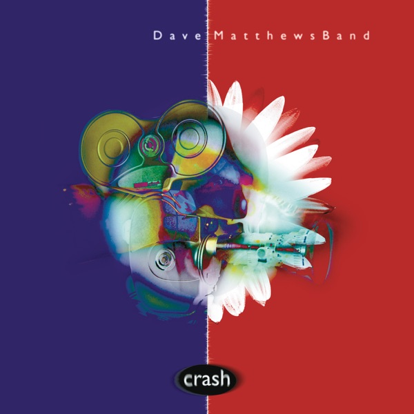

Crash
Dave Matthews Band
Upgrade idea: This is the definitive vinyl pressing — first-ever vinyl release, 180g, MPO pressed, Chris Bellman mastered from original analog sources. No upgrade path exists; this is the reference.
- Original release
- 1996
- Pressing year
- 2016
- Country
- US
- Format
- 2× Vinyl LP, Album, Reissue, Remastered (180g)
- Label / Cat#
- Bama Rags Records – 88875189401 / RCA – 88875189401 / Legacy – 88875189401
- Genres
- Rock
- Styles
- Alternative Rock, Pop Rock, Jazz-Rock
- Discogs release
- 8772005
- Discogs master
- 271472
- Apple Music
- Crash
- Wikipedia
- Crash
Production notes
Tracklist (Discogs)
| A1 | So Much To Say | 4:07 |
| A2 | Two Step | 6:27 |
| A3 | Crash Into Me | 5:16 |
| B1 | Too Much | 4:21 |
| B2 | #41 | 6:39 |
| B3 | Say Goodbye | 6:11 |
| C1 | Drive In Drive Out | 5:54 |
| C2 | Let You Down | 4:07 |
| C3 | Lie In Our Graves | 5:42 |
| D1 | Cry Freedom | 5:53 |
| D2 | Tripping Billies | 5:00 |
| D3 | Proudest Monkey | 9:11 |
Tracklist (Apple Music)
| 1 | So Much to Say | 4:06 |
| 2 | Two Step | 6:27 |
| 3 | Crash Into Me | 5:16 |
| 4 | Too Much | 4:21 |
| 5 | #41 | 6:39 |
| 6 | Say Goodbye | 6:11 |
| 7 | Drive In Drive Out | 5:54 |
| 8 | Let You Down | 4:07 |
| 9 | Lie In Our Graves | 5:42 |
| 10 | Cry Freedom | 5:52 |
| 11 | Tripping Billies | 5:00 |
| 12 | Proudest Monkey | 9:10 |
Personnel & credits
- Darren Salmieri — A&R
- Bruce Flohr — A&R [A&R Direction]
- Peter Robinson (5) — A&R [A&R Direction]
- Dave Matthews — Art Direction [Assisted By], Design [Assisted By]
- Jane Matthews — Art Direction [Assisted By], Design [Assisted By]
- Thane Kerner — Art Direction, Design
- Leroi Moore — Band [Dave Matthews Band], Alto Saxophone, Soprano Saxophone, Tenor Saxophone, Baritone Saxophone, Flute, Whistle
- Stefan Lessard — Band [Dave Matthews Band], Bass, Piano [Tac]
- Carter Beauford — Band [Dave Matthews Band], Drums, Percussion, Backing Vocals
- Boyd Tinsley — Band [Dave Matthews Band], Violin [Acoustic], Electric Violin
- Dave Matthews — Band [Dave Matthews Band], Vocals, Acoustic Guitar
- David Gorman — Design [Package]
- Kassondra Monroe — Design [Package]
- John Siket — Engineer
- Chris Laidlaw — Engineer [1st Assistant]
- Scott Gormley — Engineer [1st Assistant]
- Paul Higgins — Engineer [2nd Assistant]
- Phil Painson — Engineer [Assisted By, Green Street]
- Tim Reynolds — Guest [Special Guest], Acoustic Guitar, Electric Guitar
- Thane Kerner — Illustration [Cover]
- Chris Bellman — Lacquer Cut By
- Boyd Tinsley — Lyrics By
- Dave Matthews — Lyrics By
- Peter M. Griesar — Lyrics By
- Coran Capshaw — Management
- Ted Jensen — Mastered By
- Alex Case — Mixed By [Assisted By, Room With A View]
- Steve Lillywhite — Mixed By [Green Street]
- Tom Lord-Alge — Mixed By [Room With A View]
- C. Taylor Crothers — Photography By
- Sam Erickson — Photography By
- C. Taylor Crothers — Photography By [Band]
- Steve Lillywhite — Producer
- John Alagia — Producer [Additional Preproduction]
- Lindsay Brown — Product Manager
- Patrick Jordan — Product Manager
- Gretchen Brennison — Product Manager [Product Direction]
- Ambrosia Healy — Public Relations [Publicity]
- Chris Bellman — Remastered By [Vinyl]
- Tucker Rogers — Research [Archivist]
- Boyd Tinsley — Written-By
- Carter Beauford — Written-By
- Dave Matthews — Written-By
- Leroi Moore — Written-By
- Peter M. Griesar — Written-By
- Stefan Lessard — Written-By
Identifiers
- Barcode: 8 88751 89401 3 (Text)
- Barcode: 888751894013 (Scanned)
- Other: 88875189401S1 (On hype sticker)
- Rights Society: ASCAP
- Matrix / Runout: MPO 16-0156 A2 88985314591-A RE-1 cB (Side A, Etched, variant 1)
- Matrix / Runout: MPO 16-0156 B3 88985314591-B Re-1 cB (Side B, Etched, variant 1)
- Matrix / Runout: MPO 16-0156 / 888751189401 C 88985314591-C cB (Side C, Etched, variant 1)
- Matrix / Runout: MPO 16-0156 D3 88985314591-D Re-1 cB (Side D, Etched, variant 1)
- Matrix / Runout: MPO 16-0156 A2 88985314591-A RE-1 CB [MPO logo] 23 303120 (Side A, etched, variant 2)
- Matrix / Runout: MPO 16-0156 B3 88985314591-B Re-1 CB [MPO logo] 23 302559 (Side B, etched, variant 2)
- Matrix / Runout: MPO 16-0156 / 888751189401 C 88985314591-C CB (Side C, etched, variant 2)
- Matrix / Runout: MPO 16-0156 D3 88985314591-D Re-1 CB [MPO logo] 23 302853 (Side D, etched, variant 2)
Notes
First Time Ever on Vinyl.
20th Anniversary 2LP 180 Gram Audiophile Virgin Black Vinyl
Remastered and Cut from Original Analog Sources by Chris Bellman
Made in the EU
Includes 8-page booklet
Includes a free download of the entire album
Recorded at Bearsville Studios, Bearsville, NY
Additional Recording at Green Street Recording Studios, NYC
Notes & discrepancies
- Release year differs: your pressing=2016, Apple Music edition=1996. Apple Music typically streams the most recent remaster.
Crash is Dave Matthews Band’s second major-label studio album, released in April 1996 on RCA Records, and the album that transformed them from a college radio phenomenon into one of the best-selling touring and recording acts in America. Produced by Steve Lillywhite, it refines the sprawling improvisational energy of Under the Table and Dreaming into something more focused without sacrificing the band’s improvisational DNA. “Crash Into Me,” “#41,” “Too Much,” “So Much to Say,” and “Two Step” represent some of the strongest songwriting of Matthews’ career, and the album went on to sell over 9 million copies in the US alone, earning a Grammy for Best Rock Album.
The album’s sonic identity is inseparable from the interplay between Boyd Tinsley’s violin, LeRoi Moore’s saxophone, Stefan Lessard’s melodic bass, Carter Beauford’s extraordinarily fluid drumming, and Matthews’ percussive acoustic guitar — a texture unlike virtually any other band in mainstream rock of the era. Lillywhite’s production captures the live chemistry of the band while giving the studio versions their own authority.
The 2016 reissue (RCA / Legacy catalog 88875189401) was pressed at MPO (France) with matrix codes
MPO 16-0156 A2 88985314591-A RE-1 CB— theCBindicating Chris Bellman of Bernie Grundman Mastering, one of the most respected mastering engineers in the business. An MPO pressing with a Chris Bellman master is a genuinely high-quality reissue combination. Notably, this 2016 release marks the first time Crash was ever released on vinyl — the original 1996 release was CD-only.About this 2016 US pressing (2× Vinyl, LP, Reissue, Remastered): RCA / Legacy catalog 88875189401, 2016 reissue. Double LP, 180-gram Virgin Black Vinyl. Pressed at MPO (France), mastered by Chris Bellman (CB) at Bernie Grundman Mastering. Barcode 88751894013.